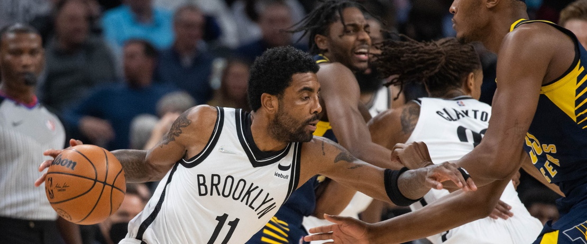

Welcome Back Kyrie
Jan. 07, 2022
On Wednesday night, we saw Kyrie Irving play his first NBA game since June 10th.
Irving hasn't played previously due to New York's mandate requiring players to get vaccinated against Covid-19 to access the arena.
The Brooklyn Nets and Kyrie Irving came to an agreement, which allows him to play in only road games. Kyrie, will likely miss a few other road games as well to teams like Toronto, who does not allow unvaccinated players across the border.
Nevertheless, in Kyrie's first game back he went 9-of-17 from the field for 22 points, 4 rebounds and 3 assist.
Kyrie struggled early on to find his rhythm, which we all knew that would be the case considering him being out for nearly 8 months. He found his rhythm in the second quarter with a pull-up-jumper down the lane.
Irving nearly had his debut spoiled by Lance Stephenson, who just signed a 10-day contract with the Pacers. Stephenson erupted for 20 points in the first quarter for the Pacers to take a 37-32 lead. Lance finished with 30 points off the bench in his third game with the team.
Kevin Durant had a monstrous game as well, finishing with 39 points.